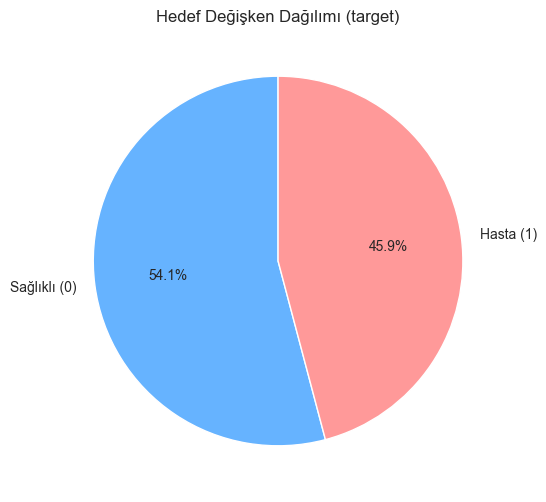
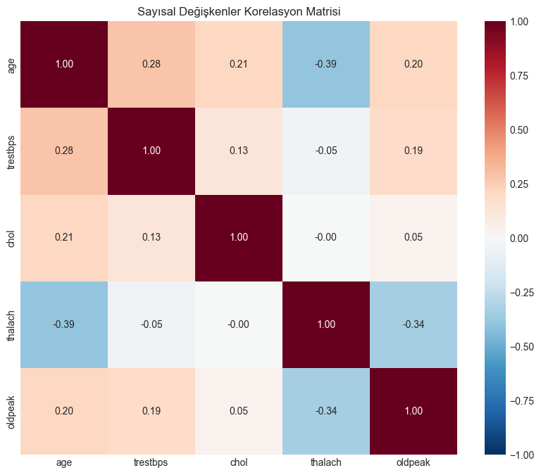
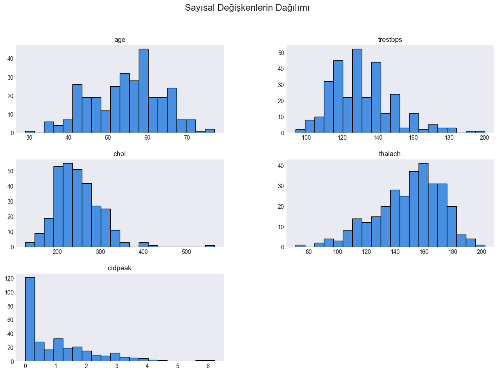

Sakarya Üniversitesi · ISE 427 Tıpta Yapay Zeka · 2025–2026 Güz
Kalp hastalığı teşhisinde standart ve özgün makine öğrenmesi modelleri
UCI Cleveland veri seti üzerinde beş standart sınıflandırıcıyı ve her birinin tıbbi veriye göre değiştirdiğim birer özgün versiyonunu aynı ön işleme ve aynı test kümesiyle karşılaştırdım. En iyi sonucu log-karesel mesafeli KNN verdi: 28 hastanın 27'sini doğru buldu.
Veri ve ön işleme
Veri seti 303 hasta kaydı ve 14 sütundan oluşuyor: yaş, cinsiyet, göğüs ağrısı tipi, kan basıncı, kolesterol, maksimum nabız vb. ve hedef (0 sağlıklı, 1 hasta).
- Eksik değerler medyan/mod ile dolduruldu.
cholvetrestbpssütunlarındaki aykırı değerler IQR yöntemiyle baskılandı.- Kategorik sütunlara one-hot encoding, sayısal sütunlara
StandardScaleruygulandı. - Veri, sınıf oranı korunarak %80 eğitim, %20 test olarak ayrıldı.



Özgün versiyonlar
KNN · log-karesel mesafe
Öklid uzaklığı yerine farkların log(1 + fark²) toplamı. Büyük farkların etkisini yumuşattığı için aykırı değerlere daha dayanıklı.
SVM · Bessel-Laplacian çekirdek
Laplacian ve Bessel fonksiyonlarını birleştiren hibrit bir çekirdek.
Lojistik regresyon · ISRU
Sigmoid yerine ISRU (inverse square root unit) tabanlı bir olasılık fonksiyonu.
Karar ağacı · Hellinger
Gini/entropi yerine Hellinger uzaklığına dayanan bölme kriteri.
Random forest · dinamik seçim
Sabit çoğunluk oyu yerine, test örneğine en yakın komşularda başarılı olan ağaçların oy kullandığı dinamik ağaç seçimi.
scikit-learn uyumlu
Özgün modeller BaseEstimator ve ClassifierMixin ile (SVM için SVC alt sınıfı) yazıldı; standart modellerle aynı fit/predict akışında kullanılıyor.
Sonuçlar
Test kümesi: 61 hasta (33 sağlıklı, 28 hasta). Teşhiste hastayı kaçırmamak en önemli ölçüt olduğu için duyarlılığa ayrıca bakıldı.
Doğruluk (%)
| Model | Doğruluk | Duyarlılık | Özgüllük | F1 |
|---|
Test kümesi küçük olduğu için tek bir hastanın farklı sınıflandırılması doğruluğu yaklaşık 1,6 puan değiştiriyor; modeller arasındaki küçük farklar bu gözle okunmalı. Özgün versiyonların hepsi iyileştirme getirmedi: Hellinger kriterli ağaç bu veri setinde neredeyse herkesi sağlıklı sınıflandırdı (duyarlılık %7), dinamik seçimli random forest da standart hâlinin gerisinde kaldı.
Not defterleri
Çıktılarıyla birlikte tarayıcıda görüntülenebilir; sırasıyla çalıştırılmaları gerekir.